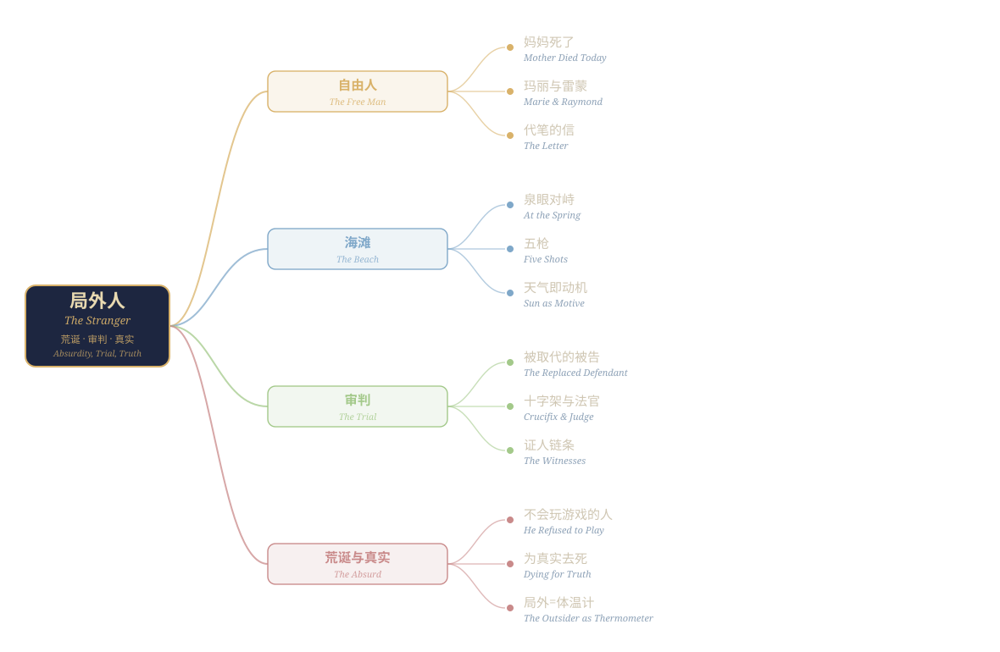

局外人
〇 · 书籍信息
基本信息
| 书名 | 《局外人》（法文原名 L'Étranger，英译 The Stranger / The Outsider）——书名即判词：他生活在社会之中，却始终游荡在社会的边缘 |
|---|---|
| 作者 | 阿尔贝·加缪（1913–1960），生于阿尔及利亚，1957 年诺贝尔文学奖，1960 年车祸去世，年仅四十六岁。他拒绝「存在主义」标签，自称只做一件事：承认荒诞，然后不逃避地活下去 |
| 结构 | 两部分：第一部写枪杀阿拉伯人前的「自由人」生活，近乎日记体；第二部写被捕后的审讯与回顾，转为内省——一个人从「旁观自己」变成「被众人旁观」 |
| 语言 | 徐和瑾译本：加缪用日常用语、口语体，几乎没有难词；热奈特为给它归类伤透脑筋，最后只好宣布「让这种叙事含糊不清」——简单，正是它最难归类的原因 |
| 一句话 | 默尔索杀人无可争议，被判死刑却理由不足——法庭真正审的不是枪，是他在母亲葬礼上没有哭：一个拒绝表演感情的人，被一个要求表演的社会处以死刑。 |
一 · 核心主题总览
一百余页的小书里埋着四组对峙：① 荒诞（全书引擎）
加缪的「荒诞」不是荒唐，是人对意义的渴望与世界的不回应之间的错位。默尔索对升职、婚姻、爱与死都说「无所谓」，不是颓废，是他诚实地看见：这些问题没有他假设的那种答案。荒诞是错位，不是黑暗。
② 感情的社会表演学
葬礼要哭、受审要悔、求婚要深情——社会为每种感情规定了动作。默尔索的罪不是「没有感情」，是不肯按规定的节奏和音量表达感情：他爱母亲，只是不认为该用眼泪证明。法庭审的正是这场表演事故。
③ 司法机器与「取代」
审判最惊人的细节：人人都替他说话——律师不让他开口，检察官替他总结人生，法官替他忏悔。他被排除在自己的案件之外，「在某种程度上被取而代之」——杀死他的不是死刑，是消失。
④ 自然与真实的同盟
默尔索跟社会总有点不顺畅，跟自然却十分融洽：海水、阳光、睡眠。加缪在序言里说他是「追求真实的殉道者」——他杀人的直接原因也是自然：太阳。这是全书最不安的对等：自然给了他幸福，也给了他扳机。
二 · 第一段 自由人—— 妈妈死了 · 星期天 ——
守灵、葬礼与十二小时的睡眠
开篇名句宣布死亡，接下来是全程的物理报告：长途汽车、牛奶咖啡、抽烟、门房、老人们的皱纹、殡车、柏油路面晒裂的果肉、佩雷兹的眼泪流不下来。默尔索不报告悲伤，只报告感官——「我想马上看到妈妈」，仅此而已。葬礼后他最期待的事是「睡上十二个小时」。加缪用这份冷静挑战读者：如果你的第一反应是他冷血，先想想是谁教你这样反应的。
◆ 语言学习 · 葬礼 · 感官
| hearse /hɜːs/ | n. 灵车（殡车）—— 例句：the hearse（送葬段）。funeral n. 葬礼；grave n. 墓 |
|---|---|
| vigil /ˈvɪdʒɪl/ | n. 守灵 —— 例句：keep vigil by the coffin（守灵夜）。vigil 又指「不眠守望」 |
| coffin /ˈkɒfɪn/ | n. 棺材 —— 例句：the screws of the coffin（螺丝钉闪闪发亮）。coffin nail 俚语=香烟 |
| hornet /ˈhɔːnɪt/ | n. 大胡蜂 —— 例句：hornets buzzing on the glass roof（守灵段）。加缪的静场手法：用虫鸣写死寂 |
句型 ｜ 「Mother died today. Or maybe yesterday; I can't be sure.」——事实 + 立即的更正：信息精确到日，情感精确到零。开篇的全部美学是「不修饰」：不加形容词的死亡通知，比任何形容词都刺耳；学英文写作，这是「情感留白」的第一课。
玛丽、雷蒙与一封代笔的信
葬礼次日他游泳、看喜剧电影、拥吻玛丽——「是在昨天」三个字让玛丽退后半步，但没说什么。随后邻居雷蒙（街区传说的「吃软饭的」）请他代笔一封羞辱情妇的信，他答应的理由是「我没有理由让他不满意」：既非善也非恶，是彻底的无所谓。这份无所谓将在海滩上第一次撞上「有所谓」的世界——那把刀，那片阳光。
◆ 语言学习 · 邻居 · 无所谓
| typist /ˈtaɪpɪst/ | n. 打字员 —— 例句：Marie, a typist at his office（玛丽的旧身份）。type v. 打字 |
|---|---|
| indifferent /ɪnˈdɪfrənt/ | adj. 无所谓的 —— 例句：indifferent to marriage and career（全书性格核心词）。indifference n.——默尔索的关键词 |
| compose /kəmˈpəʊz/ | v. 撰写 —— 例句：compose the letter for Raymond（代笔信）。compose a letter 正式用语 |
| reconcile? →(改) accompany /əˈkʌmpəni/ | v. 陪伴 —— 例句：accompany the funeral procession（送葬）。陪葬队同行；company n. 同伴 |
习语 ｜ it's all the same to me 对我都一样——默尔索的口头禅级表达；have no reason not to「没有理由不」——他答应代笔的逻辑（双重否定=零立场）。学会用他的语法说他的话，才算读懂他的道德。
三 · 第二段 海滩与五枪—— 阳光 · 刀光 · 扳机 ——
泉眼、芦苇秆子与沉默
海滨木屋、油炸鱼、「下水，好吗？」——全书最幸福的几页。然后雷蒙的手臂被刀划开，海滩尽头的泉眼处，两个阿拉伯人躺着等他们，其中一个不断吹着芦苇秆子的三个音符。冲突被写得极慢：只有阳光、沉默、泉水与三个音符——暴力来临前的世界，安静得像已经发生过了。雷蒙问「我要把他干掉吗」，默尔索劝住，拿走了枪。事情本可以到此为止。
◆ 语言学习 · 海滩 · 对峙
| pistol /ˈpɪstl/ | n. 手枪 —— 例句：the pistol in his pocket（雷蒙的枪）。gun 泛称；trigger 扳机 |
|---|---|
| gleam /ɡliːm/ | v./n. 闪光 —— 例句：the gleam on the knife（刀光）。glisten/glint 词族；光在本书是暴力单位 |
| reed /riːd/ | n. 芦苇 —— 例句：blowing on a reed, three notes（对峙段）。三个音符：全段唯一的音乐 |
| scorch /skɔːtʃ/ | v. 灼烤 —— 例句：the sun scorching his forehead（阳光段）。scorching adj. 灼热的 |
句型 ｜ 「I need only turn around and it would all be over.」/「我只要转身走开，事情就会结束。」——虚拟退路的否定：句子承认退路存在，动作拒绝使用。把选择写出来但不执行，是叙事留悬念最省力也最残忍的写法。
「一切都在这枪声中开始」
他独自走回泉眼，阿拉伯人单独躺在那里。太阳与他埋葬母亲那天一模一样，汗水流进眼睛，刀光「如闪亮的光剑直刺前额」，铙钹般的太阳压在额头上——扳机扣动，「一切都在这枪声中开始」。然后又是四枪，「仿佛在厄运之门上急促地敲了四下」。这不是凶手的忏悔，是感官的物理报告：把杀人写成一桩天气事件，是二十世纪小说最著名的一次叙事实验。
◆ 语言学习 · 枪声 · 物理
| trigger /ˈtrɪɡə/ | n./v. 扳机；引发 —— 例句：pull the trigger（原文）。trigger sth off 引申用法 |
|---|---|
| veil /veɪl/ | n. 帘，幕 —— 例句：a veil of warm sweat（「温热的水帘」原文）。veil of tears 习语 |
| balance /ˈbæləns/ | n. 平衡 —— 例句：the balance of the day（「这一天的平衡」）。off balance 失衡 |
| shatter /ˈʃætə/ | v. 打碎 —— 例句：I shattered the harmony of the day（原文义）。shatter 比 break 更彻底、更响 |
习语 ｜ knock at the door of misfortune 敲厄运之门——「急促地敲了四下」的意象；under the sun 在太阳底下——本书的太阳不是修辞，是主犯。在加缪的语法里，天气永远算动机。
四 · 第三段 审判—— 档案 · 十字架 · 证人 ——
我是多余的人（被取代的被告）
第二部反转视角：从日记体变成庭审记录。预审十一个月，律师不许他说「人只要智力健全都或多或少希望所爱的人死去」这种真话；检察官把他的案子与即将开庭的弑父案相提并论；他坐在自己的审判里，「感到自己在此多余」。全书最锋利的段落不是控诉司法黑暗，而是那个平静的疑问：「那么，到底谁是被告？」——当所有人都替你说话时，你已经出局了。
◆ 语言学习 · 庭审 · 证词
| defendant /dɪˈfendənt/ | n. 被告 —— 例句：Who, then, was the defendant?（「到底谁是被告」）。defend v. 辩护；defense n. 辩方 |
|---|---|
| prosecutor /ˈprɒsɪkjuːtə/ | n. 检察官 —— 例句：the prosecutor's clichés（陈词滥调的控方）。prosecute v. 起诉 |
| testify /ˈtestɪfaɪ/ | v. 作证 —— 例句：testify for Raymond（「给他作证」）。testimony n. 证词 |
| replace /rɪˈpleɪs/ | v. 取代 —— 例句：they were, to some extent, taking my place（「对我取而代之」）。replace… with…；本课最不安的词 |
句型 ｜ 「I had the strange impression that they were there to judge me.」/「我一时产生奇特的印象，认为他们是来对我进行审判。」——守灵夜的老人们已预演过这场审判。「审判」在葬礼上先排练了一次：加缪的结构是押韵的；前后呼应是长篇写作的基本功。
十字架与「反基督先生」
预审法官挥着银质十字架问他信不信天主，得到「不信」后咆哮「所有人都信仰天主」；法官的伤心话是全书最滑稽也最深刻的台词之一：「我从未见到过像您这样顽固不化的灵魂。」至于悔恨，默尔索想了想，说「与其说真正后悔，不如说我感到有点厌烦」。社会的每个岗位——法官、律师、神甫——都在按剧本催促他表演感情，而他连「该说什么」都懒得编。法官最后亲热地拍他肩膀：「今天就到此结束，反基督先生。」
◆ 语言学习 · 十字架 · 悔恨
| crucifix /ˈkruːsəfɪks/ | n. 耶稣受难十字架 —— 例句：a silver crucifix（法官挥舞的道具）。cross 泛指；crucifix 带像 |
|---|---|
| repent /rɪˈpent/ | v. 悔过 —— 例句：repent of one's sins（法官的要求）。repentance n.；与 regret 辨析：repent 是宗教忏悔 |
| atheist /ˈeɪθɪɪst/ | n. 无神论者 —— 例句：his mother was not an atheist（「妈妈不是无神论者」）。atheism n. |
| obstinate /ˈɒbstɪnət/ | adj. 顽固的 —— 例句：an obstinate soul（「顽固不化的灵魂」）。obstinacy n.；与 stubborn 辨析：obstinate 更书面 |
习语 ｜ meet one's maker 见造物主（=死）——宗教语境的委婉语；go through the motions 走过场式表演——默尔索拒绝做的事，全书的社会在强制执行。「悔恨的表演」与「悔恨本身」的区别，就是这本小说的道德分区。
五 · 第四段 荒诞与真实—— 不玩游戏 · 为真实去死 ——
不会玩游戏的人
加缪在美国版序言里给出官方判词：主人公被判死刑，是因为他不会玩这种游戏；他是社会的局外人，游荡在社会的边缘——不遵循社会的准则，却与自然环境保持深厚的关系。他「贫穷而不加掩饰，喜欢不留下阴影的太阳」；「并非缺乏敏感，而是因执着而有一种深沉的爱，喜爱完美和真实」。全书于是完成倒置：真正的杀人罪成立，但死刑的真正罪名是「真实」——所以他被称为「追求真实的殉道者」。
◆ 语言学习 · 荒诞 · 真实
| absurd /əbˈsɜːd/ | adj. 荒诞的 —— 例句：the absurd（加缪哲学的核心词）。absurdity n.；荒诞=错位而非荒唐 |
|---|---|
| conformity /kənˈfɔːməti/ | n. 随大流 —— 例句：conformity to the rules of the game（社会准则）。conform v.；nonconformist n. 反叛者 |
| alienation /ˌeɪliəˈneɪʃn/ | n. 疏离 —— 例句：alienation from society（局外人的处境）。alienate v.；英译 The Outsider 的思想内核 |
| authentic /ɔːˈθentɪk/ | adj. 真实的 —— 例句：authentic feelings（他唯一不肯让步的东西）。authenticity n.——殉道的对象 |
句型 ｜ 「He was condemned because he didn't cry at his mother's funeral.」/「他被判死刑，是因为他不会玩这种游戏。」——because 从句装进全书的倒置：法律理由（杀人）与真实理由（真实）的错位。议论写作的绝技：用一个 because 说两层。
局外人与现代小说的分水岭
热奈特为本书的叙述方式写下了著名的界定难题，最后宣布「不作任何解释，让这种叙事含糊不清」。第一部的日记体与第二部的回顾体互相拆台，读者既在人物意识内部（第一人称）又在其意识外部（人物无个性）。加缪写的不只是对一个人的审判，也是对小说体裁的审判——它宣告了五十年代小说的自我认识与危机。这也是它八十年常销的原因：形式即内容，读法即主题。
◆ 语言学习 · 叙事 · 遗产
| narration /nəˈreɪʃn/ | n. 叙述 —— 例句：diary narration vs retrospective narration（两种体式）。narrator n. 叙述者 |
|---|---|
| focus /ˈfəʊkəs/ | n. 焦点 —— 例句：external focalization（热奈特的「外聚焦」术语）。narratology 叙事学 |
| testimony /ˈtestɪməni/ | n. 证词 —— 例句：the whole book as testimony（全书即证词）。bear testimony to |
| legacy /ˈleɡəsi/ | n. 遗产 —— 例句：the legacy of the outsider（现代小说的分水岭）。legacy 又指「遗赠」 |
习语 ｜ a stranger in one's own life 自己人生里的异乡人——书名的终极读法；the exception that proves the rule 例外反而证明规则——默尔索恰恰是反例：他的存在证明了规则的强制。局外人不是社会的敌人，是社会的体温计。
六 · 人物图鉴与成长弧线—— 主角配角 · 一张表看穿 ——
主要人物
默尔索 Meursault——叙述者与被告：公司小职员，不善于也不屑于表演感情。弧线：葬礼的冷静 → 无所谓的日常 → 一桩天气般的杀人 → 庭审里的消失 → 行刑前夜对世界的「温和友谊」。他是「追求真实的殉道者」，也是全书最大的空白：没人能从内部读懂他。
玛丽 Marie——打字员出身的姑娘：爱游泳、爱笑、问他爱不爱她。得到「这毫无意义，但我觉得不爱」后仍与他结婚。她是全书唯一接受了默尔索语法的人——爱他，但不要求他用规定动作证明。
雷蒙 Raymond——邻居、「吃软饭的」：殴打情妇、请默尔索代笔羞辱信、把他拖进海滩冲突——全书的火种由雷蒙保管，而熄灭的是默尔索。
预审法官——挥十字架的信仰暴力：他要求的不只是信，是忏悔的表演。「反基督先生」这个外号，是他与默尔索互相无法翻译的证据。
萨拉马诺 Salamano——与狗互相厌恶又相依为命的老头：狗丢了，他对默尔索说「我很爱我的狗」。本书最温柔的人物：他证明了感情可以不表演，甚至可以不自知。
次要人物（功能位）
| 门房 | 守灵夜的证人：后来在法庭上作证默尔索「不想看母亲的遗体」——证词与原文对照，社会记忆如何被改写 |
|---|---|
| 佩雷兹 | 母亲的老友：「她的未婚妻」玩笑的另一半；葬礼上眼泪流不下来的人——全场唯一真实的悲伤，无人采信 |
| 塞莱斯特 | 饭馆老板：法庭上为默尔索辩护「这是正派人」——小人物证词的可笑与可贵 |
| 神甫 | 行刑前的最后说客：被默尔索生平最激烈的一次长篇反驳击退——叙述者最后写道：他看上去像个囚犯——全书结尾，两位囚犯互换了位置 |
七 · 主题与象征—— 每个道具都在说话 ——
| 太阳 ↔ 主犯与盟友 | 安葬日的太阳、海滩的太阳、法庭的太阳：它是默尔索幸福的来源，也是他杀人的直接原因——自然在加缪的账本里同时记账两边 |
|---|---|
| 牛奶咖啡 ↔ 生活的具体性 | 守灵夜的那杯咖啡：他「很喜欢喝」。抽象的感情他不谈，具体的生活他全部在场 |
| 十字架 ↔ 表演的道具 | 法官挥舞的银质十字架：信仰被用成刑具——当安慰变成命令，它就不再是安慰 |
| 芦苇秆子的三个音符 ↔ 暴力前的世界 | 对峙段唯一的音乐：三个音符、泉水、沉默——灾难前最准确的天气预报是安静 |
| 枪声的五响 ↔ 结构 | 一枪 + 四枪：一枪杀人，四枪敲在厄运之门上——多余的四枪杀死的不是阿拉伯人，是默尔索自己的社会生命 |
| 「多余」 ↔ 局外 | 守灵夜「他们是来审判我的」、庭审「感到自己在此多余」：局外不是位置，是别人替你说话时你的沉默 |
八 · 写作手法赏析—— 怎么写，就能怎么学 ——
① 零度叙事
葬礼全程只报告物理事实：咖啡、烟、灯、虫鸣、汗水——把感情从叙述里抽走，读者被迫自己供给情绪；供给之后，情绪就成了读者自己的审判材料。
② 日记体与回顾体的对撞
第一部「我」在场的当下记录，第二部回忆与庭审交织——两种时态互相拆台，形式本身就在演「局外」；学结构：让前半部为后半部提供证词。
③ 自然写法
阳光、海水、风的段落密度极高，且每次都推着情节走：加缪把天气写成人物——太阳先让人幸福，再让人开枪。
④ 重复与押韵
「审判」在守灵夜预演一次、法庭正式开庭一次；「妈妈死了」在开篇与庭审各出现一次——结构上的重复是主题的回声室。
⑤ 反问的缺席
全书几乎没有抒情议论，唯一的例外是行刑前夜那段长独白——把全部抒情预算留给结尾一页，是本书最著名的声学设计。
九 · 名段欣赏—— 原文精读 · 逐段赏析 ——
十 · 金句摘录—— 16 条 · 中英对照 · 带出处 ——
"Mother died today. Or maybe yesterday; I can't be sure."今天，妈妈死了。可能是昨天，我不清楚。—— 第一部 · 一 · 开篇
"很脏。有鸽子和阴暗的院子。那里的人都皮肤洁白。"—— 第一部 · 五 · 谈巴黎
"生活永远无法改变，不管怎样，各种生活全都一样，在这里生活，我也觉得不错。"—— 第一部 · 五 · 答老板
"我想要对他声明，我跟大家一样，跟大家完全一样。"—— 第二部 · 一
"人只要智力健全，都或多或少地希望自己所爱的人死去。"—— 第二部 · 一 · 对律师
"海水凉快，我游泳开心。我跟玛丽一起游得很远，我们都感到两人动作协调，心满意足。"—— 第一部 · 六
"我只要转身走开，事情就会结束。但整个海滩都被太阳晒得颤动，从后面向我压来。"—— 第一部 · 六
"我知道自己打破了这一天的平衡，打破了海滩上非同寻常的寂静，我在这海滩上曾经幸福。"—— 第一部 · 六
"接着，我又对着那不动的身体开了四枪……我仿佛在厄运之门上急促地敲了四下。"—— 第一部 · 六
"那么，到底谁是被告？重要的是被告。我有话要说！"—— 第二部 · 庭审
"我感到自己在此多余。"—— 第二部 · 庭审
"我从未见到过像您这样顽固不化的灵魂。"—— 第二部 · 预审法官
"与其说真正后悔，不如说我感到有点厌烦。"—— 第二部 · 一
"书中的主人公被判死刑，是因为他不会玩这种游戏。从这个意义上说，他是社会的局外人。"—— 译本序 · 加缪美国版序言
"此人没有任何英雄姿态，却同意为真实去死。"—— 译本序 · 加缪美国版序言
"他并非缺乏敏感，而是因执着而有一种深沉的爱，喜爱完美和真实。"—— 译本序 · 加缪美国版序言
十一 · 拓展阅读—— 原文 · 词条 · 译文 ——
原文与哲学
- The Stranger（L'Étranger）— Wikipedia —— 英译本历史与两个译名的争论：The Stranger 与 The Outsider
- The Myth of Sisyphus — Wikipedia —— 《西西弗神话》：荒诞哲学的正面陈述，本书的哲学搭档
作者与背景
- Albert Camus — Wikipedia —— 生平：阿尔及利亚—巴黎—诺贝尔奖—车祸；荒诞与反抗的两个阶段
- Absurdism — Wikipedia —— 荒诞主义词条：荒诞=错位而非黑暗，与加缪的界定一致
十二 · 个人感悟与心得—— 三点心得 ——
葬礼 · 枪声 · 一场表演事故
这本书逼人诚实的地方在于：我们都确定默尔索该死——他杀了人；我们又都隐隐觉得判词不对——因为他没有哭。两种判断同时成立，正是加缪的设计：他要你亲身体验一次「社会感情规定」的重量，而不是听他控诉。读完再看葬礼、面试、婚礼上的表情管理，会突然分清哪些是感情，哪些是感情的规定动作。 第二个收获是「被取代」的恐惧。庭审那几页写的其实是一种极现代的经验：你的人生被别人总结、解释、传播，而你的版本无人采信。默尔索的局外，不是他自愿退到边缘，而是世界替他挪走了中央的位置——「感到自己在此多余」这句话，在任何会议室、家族群、社交媒体上都成立。 从英文学习角度，这是全套笔记里门槛最低、回报最高的一册：加缪的句式短平、词汇日常，逐句仿写的性价比极高。真正难的不是语言，是「不用形容词写情感」的勇气——写完自己的一个星期天（像第一章那样只记录事实），你就懂了什么叫零度叙事。—— 加缪的墓志铭可以这样概括他自己：在隆冬，我终于知道，我身上有一个不可战胜的夏天。（In the depth of winter, I finally learned that within me there lay an invincible summer.）
十三 · 一页速查（复习用）
| 全书骨架 | 第一部：葬礼 → 玛丽与雷蒙 → 海滩五枪 ｜ 第二部：预审 → 庭审 → 死刑与行刑前夜 |
|---|---|
| 核心倒置 | 杀人罪成立，但死刑的真正罪名是「在母亲葬礼上没有哭」——法律理由与真实理由的错位 |
| 必背表达 | indifferent / it's all the same to me / pull the trigger / shatter the balance / take my place / go through the motions |
| 两大手法 | ① 零度叙事（只报告感官，不报告感情） ② 结构押韵（守灵夜预演审判；一枪与四枪） |
| 一句话总结 | 一个拒绝表演感情的人，被一个要求表演的社会处以死刑 |
十四 · 全书思维导图—— 一图纵览 ——

一图纵览全书骨架 · 中英双语对照 · 手机端可左右滑动查看全图